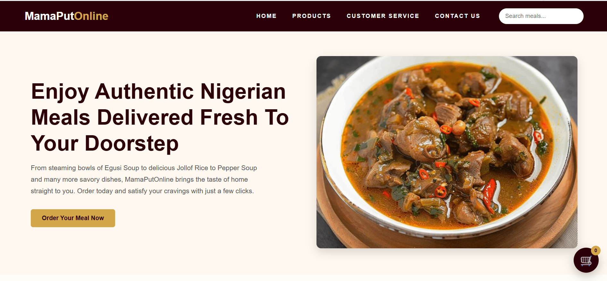

MamaPut Online
Built to help users discover and order authentic Nigerian meals online without visiting physical food vendors.
Design → Development → Delivery
Designed user-friendly ordering flows and responsive layouts, developed reusable interface components, and delivered a mobile-first food ordering experience optimized for accessibility.